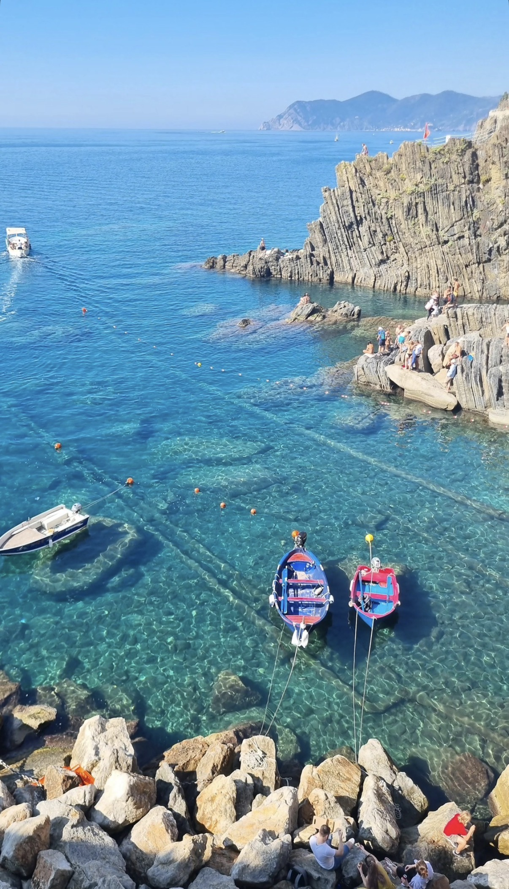
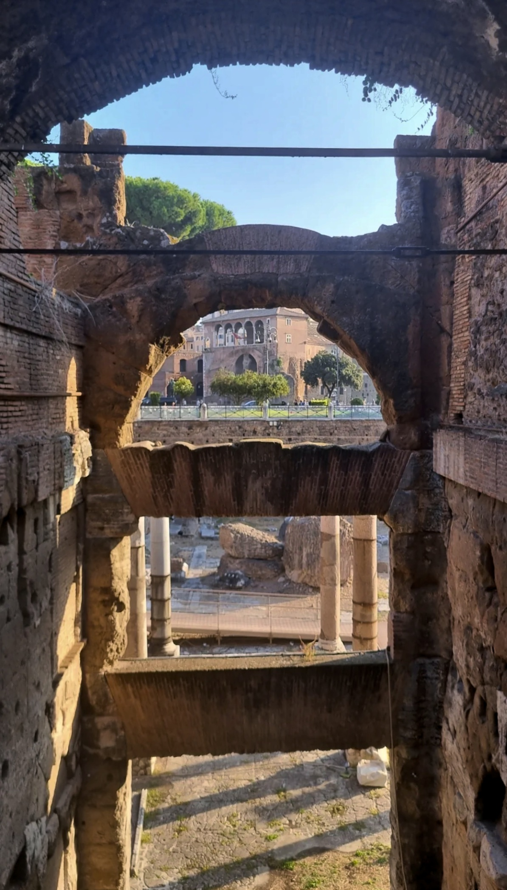

São Paulo, Brasil. La fotografía empezó como una forma de desacelerar — prestar atención a la luz, al encuadre, a lo que normalmente pasa desapercibido.
En las personas, busco el gesto natural — la sonrisa que sucede sola, la expresión de quien está inmerso en el momento. Fotografío sin interrumpir, porque creo que las mejores imágenes nacen cuando la persona simplemente es quien es.
Mi trabajo transita entre paisajes, retratos y proyectos autorales. Composición cuidadosa, interferencia mínima.
Canon EOS M50 Mark II · Godox Flash